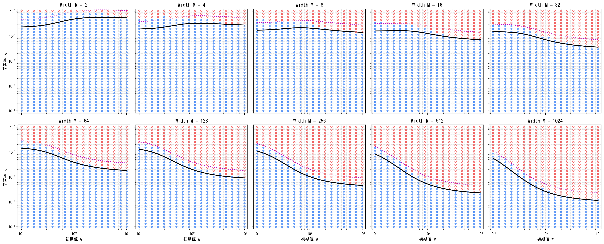
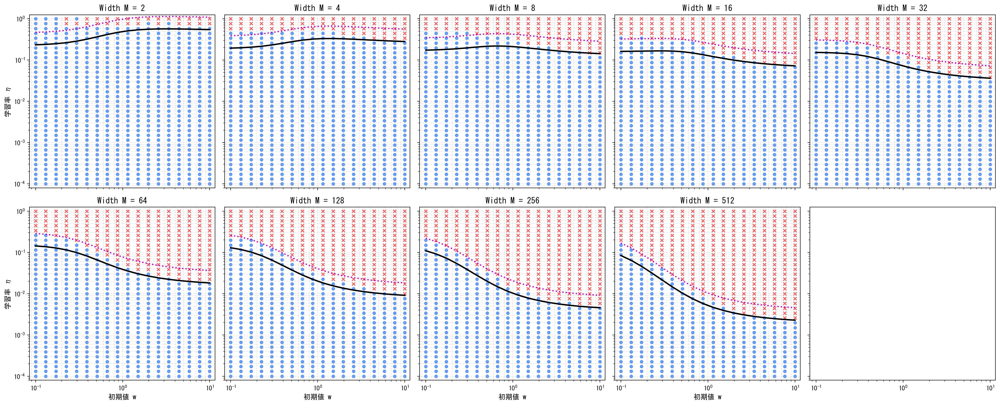

Experimental Setup 実験環境の定義
本研究では，以下の計28,350通りのモデル環境において，学習の収束と発散の境界を記録した．相図中の紫の点線はカタパルト限界，黒い実線は線形安定限界を表している．先行研究（Lewkowycz et al., 2020）において，この境界は線形モデルで理論導出され，tanh活性化関数下では経験的に両者の間に収まるとされてきた．しかし実際の非線形的な環境下を設定した本グリッドサーチでは，広範な領域で同境界の成立が実証された一方，極小幅かつ小初期値の領域において，カタパルト限界を大きく上回る学習率でも発散しない未開拓の現象を発見した．よって今回，このメカニズムの理論証明を行った．（内容は論文あるいはポスターを参照．）
モデル・学習環境
-
❖
アーキテクチャ: 2層 $\tanh$ ネットワーク
-
❖
ターゲット関数: $y = \sin(kx)$ （サンプル数 $N=200$）
-
❖
最適化手法: フルバッチ勾配降下法 (損失関数: MSE)
-
❖
初期化手法:
第1層（隠れ層）: 一様分布（初期値 $w$ に基づき，$-w$ から $w$ の範囲でランダムに設定）
第2層（出力層）: Xavier初期化（ネットワーク幅 $N$ に反比例する適切な範囲を持つ一様分布を用い，勾配のスケールを調整） -
❖
最大エポック数: 5,000 エポック
探索パラメータ空間 計 28,350 試行
-
ターゲット周波数 $k \in [1, 5]$1, 2, 3, 4, 5 (5段階)
-
初期値スケール $w \in [0.1, 10.0]$公比約1.3の対数分割 (18段階)
-
学習率 $\eta \in [0.0001, 1.0]$公比約1.3の対数分割 (35段階)
-
ネットワーク幅 $N \in [2, 512]$2, 4, 8, 16, 32, 64, 128, 256, 512 (9段階)
Phase Diagrams 相図ギャラリー
各ターゲット周波数 $k$ における，初期値 $w$（横軸）と学習率 $\eta$（縦軸）の相図です．
画像をタップすると全画面で詳細を確認できます．
赤色: 発散 (Diverged) / 青色: 収束 (Survived) / 紫の点線: カタパルト限界 / 黒い実線: 線形安定限界

ターゲット周波数: $k = 1$
ターゲット周波数: $k = 2$
ターゲット周波数: $k = 3$
